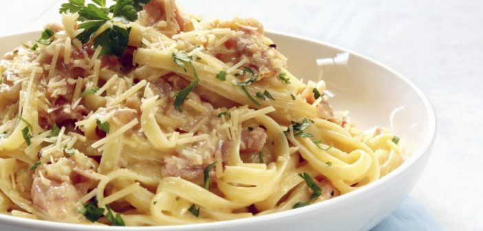

Macarrão a Carbonara

Sobre a receita
A receita de macarrão à carbonara é uma das mais clássicas receitas italianas.
Muito simples e prático de preparar, o macarrão à carbonara leva poucos ingredientes e é muito saboroso
Ingredientes
- 500 g de macarrão de sua preferência
- 250 g de bacon
- 1 caixa ou lata de creme de leite
- 50 g de queijo ralado
- 2 ovos
- Sal a gosto
Passo a Passo
- Corte os bacons em cubos pequenos e frite-os, após fritos, adicione o creme de leite e reserve
- Coloque o macarrão para cozinhar e quando estiver quase pronto,bata os ovos juntos com o sal e o queijo ralado com um garfo e reserve
- Escorra o macarrão e não jogue água fria, adicione os ovos ao macarrão, misture bem e depois adicione o creme de leite com o bacon